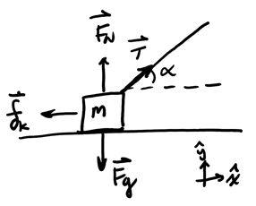
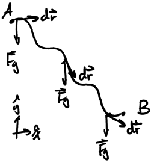
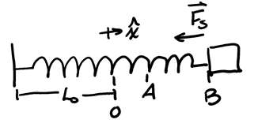
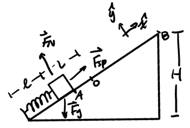
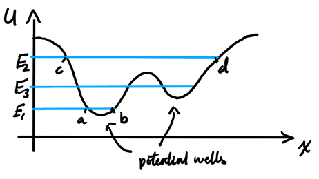

Work and Energy
Table of Contents
Since energy is a scalar quantity, it is a lot easier to manipulate than forces. Therefore, there is the possibility that we can make a lot of dynamics problems easier by using energy instead of Newton's laws.
1. Work
Work is a measure of energy transferred to a system to perform a displacement (no displacement, no work):
\begin{align} \boxed{W = \int_A^B \vec{F} \cdot \text{d}\vec{r}} \end{align}Note that work depends on a process from a point A to a point B; it is not a measure of energy at a given point. Work is represented by a line integral that depends on the magnitude of \(\vec{F}\), the distance from A to B, and the relative direction between \(\vec{F}\) and \(\text{d}\vec{r}\).
For work with a constant magnitude and constant angle \(\theta\) with the direction of motion, we can simplify the formula for work to:
\begin{align} W_{AB} = \int_A^B F\cos\theta \text{ d}r = \boxed{F\cos\theta L_{AB}} \notag \end{align}where \(L\) is the length of the path from \(A\) to \(B\).
1.1. Net Work
We can find the net work done by all the forces on a system by summing up all of the individual works:
\begin{align} W_\text{net} &= \sum_i W_i = \sum_i \int \vec{F}_i \cdot \text{d}\vec{r} \notag \\ &= \int \sum_i \vec{F}_i \cdot \text{d}\vec{r} \notag \end{align}Then, the sum of all the forces is just the net force, so:
\begin{align} \boxed{W_\text{net} = \int \vec{F}_\text{net} \cdot \text{d}\vec{r}} \end{align}2. Kinetic Energy
We define kinetic energy, the energy related to motion, as:
\begin{align} \boxed{K = \frac{1}{2}mv^2} \end{align}3. Work-Energy Theorem
Since Newton's 2nd Law tells us that \(\vec{F}_\text{net} = m\vec{a}\), then from (3) we have:
\begin{align} W_\text{net} &= \int_A^B m\vec{a} \cdot \text{d}\vec{r} \notag \\ &= m\int_A^B \frac{\text{d}\vec{v} \cdot \text{d}\vec{r}}{\text{d}t} \notag \\ &= m \int_A^B \text{d}\vec{v} \cdot \frac{\text{d}\vec{r}}{\text{d}t} \notag \\ &= m \int_A^B \vec{v} \cdot \text{d}\vec{v} \notag \\ &= m \left[ \frac{v^2}{2} \right]_A^B \notag \\ &= \frac{1}{2}mv_B^2 - \frac{1}{2}mv_A^2 \notag \end{align}By (4), the definition of kinetic energy, we just have:
\begin{align} \boxed{W_\text{net} = \Delta K} \end{align}Example: Dragging a block
Consider a block dragged with a rope:

In this case, the normal force and gravity are perpendicular to the direction of motion, so they don't do work. Thus:
\begin{align} W_\text{net} &= W_T + W_{f_k} \notag \\ &= TL\cos\alpha + \mu_kF_N L\cos(180^{\circ}) \notag \\ &= TL\cos\alpha - \mu_kF_N L \notag \end{align}Since there are two unknowns, we need a second equation. Notice that by Newton's 2nd law, we have:
\begin{align} F_N + T\sin\alpha &= mg \notag \\ F_N &= mg - T\sin\alpha \notag \end{align}Since we are enforcing constant speed, \(\Delta K = 0\) so \(W_\text{net} = 0\), so by substitution we get:
\begin{align} TL\cos\alpha - \mu_k(mg-T\sin\alpha)L &= 0 \notag \\ T\cos\alpha - \mu_k(mg-T\sin\alpha) &= 0 \notag \\ T\cos\alpha - \mu_kmg + \mu_k T\sin\alpha &= 0 \notag \\ T(\cos\alpha + \mu_k \sin\alpha) &= \mu_k mg \notag \end{align}Thus,
\begin{align} \boxed{T = \frac{\mu_k mg}{\cos\alpha + \mu_k\sin\alpha}} \notag \end{align}4. Potential Energy
Forces like gravity and spring force are called conservative forces because the work only depends on the start and end points, but not the path followed from the start to the end (path independent).
For such forces, we can define a new type of energy called potential energy \(U\):
\begin{align} \boxed{\Delta U = -W_{C}} \end{align}where \(W_{C}\) is the work done by conservative forces.
We can also relate potential energy to work by considering that \(\text{d}U = -\vec{F} \cdot \text{d}\vec{r}\). Then, writing this using differentials, we have:
\begin{align} \text{d}U &= \frac{\partial U}{\partial x}\text{d}x + \frac{\partial U}{\partial y}\text{d}y + \frac{\partial U}{\partial z}\text{d}z \notag \\ -\vec{F} \cdot \text{d}\vec{r} &= -F_x\text{d}x - F_y\text{d}y - F_z\text{d}z \notag \end{align}Matching the differentials, we get that:
\begin{align} \boxed{F = - \nabla U} \end{align}We can intuitively understand this by considering a landscape of hills and valleys, with gravitational potential energy as representative of potential energy. Since the gradient points in the direction of the fastest increase, the gradient of the potential energy would point in the "steepest" direction. However, force would drive "downhill," towards the point of less potential energy, and so therefore it would be the opposite of the gradient.
4.1. Gravitational Potential Energy
Consider a path where gravity acts on the system:

The key insight here is that we can split up \(\text{d}\vec{r}\) into \(\text{d}x\hat{x} + \text{ d}y\hat{y}\). Then:
\begin{align} W_{AB} &= \int_A^B -mg\hat{y} \cdot (\text{d}x\hat{x} + \text{d}y\hat{y}) \notag \\ &= \int_A^B -mg\text{ d}y \notag \\ &= -mg\Delta y \notag \end{align}If we call \(y\) the height \(h\), with positive \(h\) pointing in the upward direction, then we have:
\begin{align} W_{AB} = -mg\Delta h \notag \end{align}Therefore, gravitational potential energy \(U_g\) is the following if height is in the upward positive direction:
\begin{align} \boxed{\Delta U_g = mg\Delta h} \end{align}Note that this is only true for objects on Earth; in the context of universal gravitation, we must use a different calculation.
4.2. Elastic Potential Energy
This potential energy is spring-related. Consider a block on the end of the spring moving from point \(A\) to point \(B\):

Since we only have one direction of motion \(\hat{x}\), we can write the work as:
\begin{align} W_{AB} &= \int_A^B -kx\hat{x} \cdot \text{d}x\hat{x} \notag \\ &= -k \int_A^B x\text{ d}x \notag \\ &= -k \left[ \frac{x^2}{2} \right]_A^B \notag \end{align}Then, the work is just:
\begin{align} W_{AB} = -\frac{1}{2}k(x_B^2 - x_A^2) \notag \end{align}Therefore, the elastic potential energy \(U_{el}\) is:
\begin{align} \boxed{\Delta U_{el} = \frac{k}{2}(x_B^2 - x_A^2)} \end{align}4.3. Conservation of Mechanical Energy
From the work-energy theorem, we can split up the work into work done by conservative forces, \(W_C\), and work done by non-conservative forces, \(W_{NC}\):
\begin{align} W_\text{net} &= \Delta K \notag \\ W_C + W_{NC} &= \Delta K \notag \end{align}Now, by (5) we have:
\begin{align} -\Delta U + W_{NC} &= \Delta K \notag \\ \Delta U + \Delta K &= W_{NC} \end{align}We define the mechanical energy of the system to be the sum of the potential and kinetic energies, \(E\). Thus, we have the following:
\begin{align} \boxed{\Delta E = W_{NC}} \end{align}This implies that mechanical energy is conserved if only conservative forces act on the system.
Example: Block with spring on ramp
Consider a block held by a spring on a ramp, with point 0 being the equilibrium position of the spring:

Assuming that we know \(k\), \(L\), and \(l\), determine \(v\) at the top of the ramp. Also assume that there is no friction.
Using the conservation of mechanical energy, we know that since there is no work done by non-conservative forces, we can say that:
\begin{align} \Delta U + \Delta K &= 0 \notag \\ \Delta U_{el} + \Delta U_g + \Delta K &= 0 \notag \end{align}We can calculate \(\Delta U_{el}\), noting that it only applies during the full compression of the spring to its fully released position:
\begin{align} \Delta U_{el} = \frac{1}{2}k\left(0-(-L)^2\right) = -\frac{kL^2}{2} \notag \end{align}We can also calculate \(\Delta U_g\):
\begin{align} \Delta U_g &= mg\Delta h \notag \\ \Delta U_g &= mg(H-l\sin\theta) \notag \end{align}For calculating \(\Delta K\), we know that \(v_0=0\) since the object starts with no initial speed:
\begin{align} \Delta K = \frac{1}{2}mv^2 - 0 = \frac{1}{2} mv^2 \notag \end{align}Plugging this back into our conservation equation, we have:
\begin{align} -\frac{kL^2}{2} + mg(H-l\sin\theta) + \frac{1}{2}mv^2 &= 0 \notag \\ \frac{kL^2}{2} - mg(H-l\sin\theta) &= \frac{1}{2}mv^2 \notag \\ kL^2 - 2mg(H-l\sin\theta) &= mv^2 \notag \\ \frac{kL^2}{m} - 2g(H-l\sin\theta) &= v^2 \notag \end{align}Thus, we find the velocity to be:
\begin{align} \boxed{v = \sqrt{\frac{kL^2}{m} - 2g(H-l\sin\theta)}} \notag \end{align}4.4. Potential Energy Diagrams
If only conservative forces act on an object, we can examine a potential energy diagram like the one below:

In the diagram, we have two potential wells: areas where the potential energy is at a local minimum. We can intuitively understand this by considering gravitational potential energy and the diagram to be a visual representation of hills and valleys.
Using this intuitive interpretation, we can define turning points where an object moving along the curve would reverse motion, thus going back through the potential well.
If the system has mechanical energy \(E_1\), then the system can only exist between the points \(a\) and \(b\) which are the two turning points, since the velocity is zero at those points instantaneously.
If the system has mechanical energy \(E_2\), then the system can exist in the broader region from \(c\) to \(d\). Similarly, if mechanical energy is at \(E_3\), the line crosses two potential wells, but since there is a "hill" in between, the system will only remain in the area it started in.
4.4.1. Stability of Equilibrium
At points where the slope is zero (at the top and bottom of the hills), the system is said to be in equilibrium. The degree of stability depends on whether the point corresponds to a minimum or maximum of \(U(X)\):
- If it is a maximum, we are in unstable equilibrium.
- if it is a local minimum, we are in metastable equilibrium.
- If it is an absolute minimum, we are in stable equilibrium.
Systems at unstable equilibrium will not return to the equilibrium point if moved slightly, but systems at stable equilibrium will return. Metastable equilibrium is when a system is stable under small disturbances but can transition to a more stable state if sufficiently disturbed.